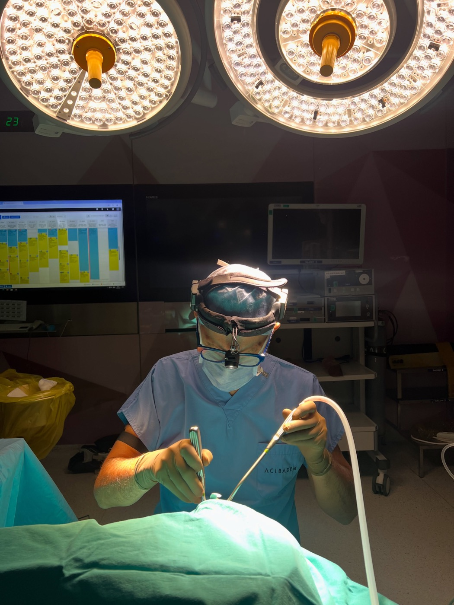
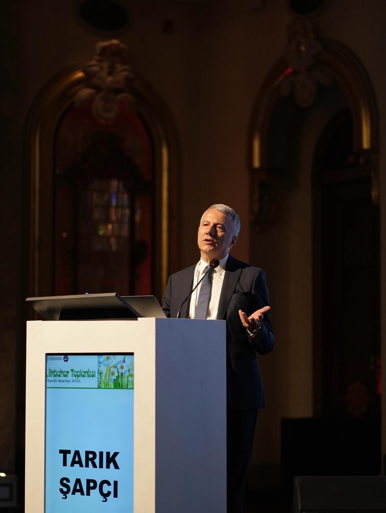
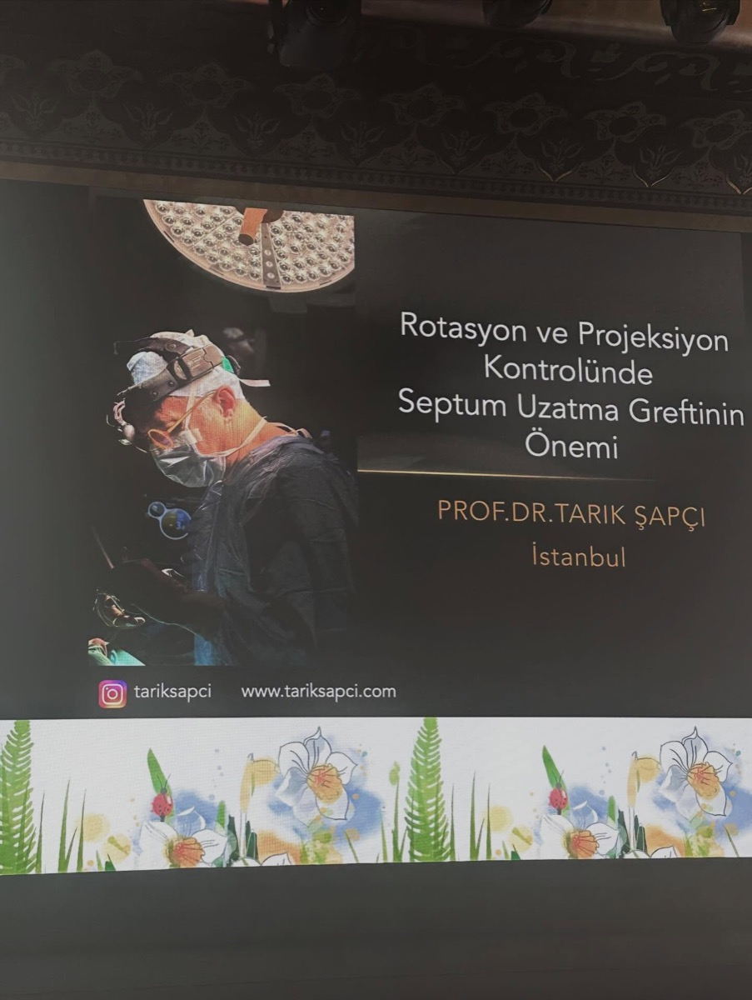
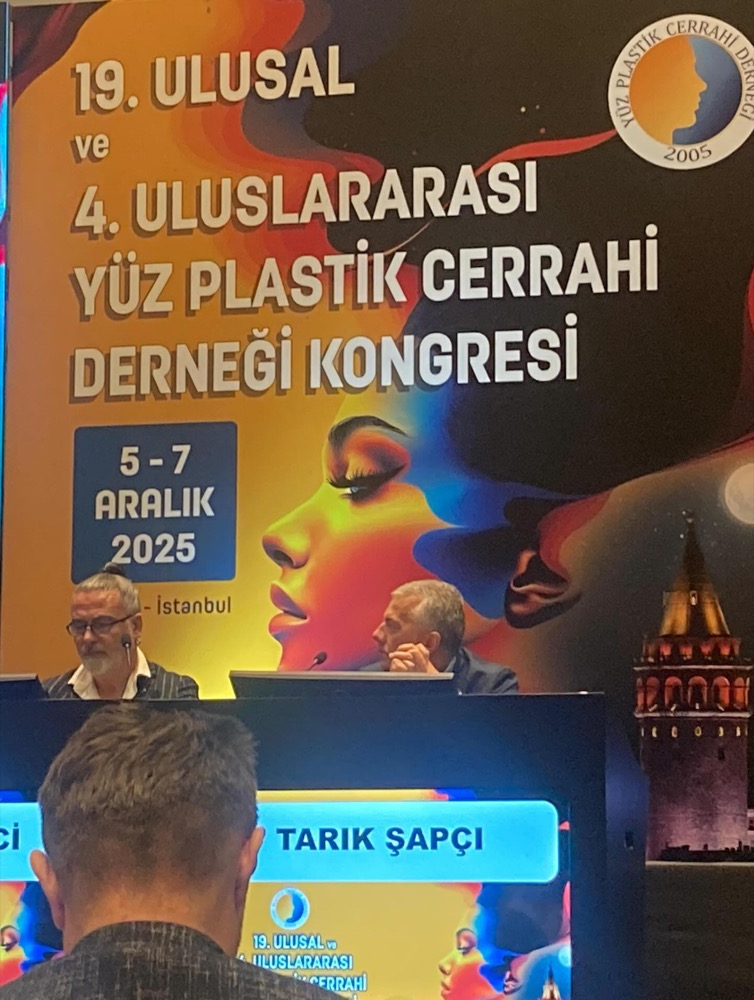
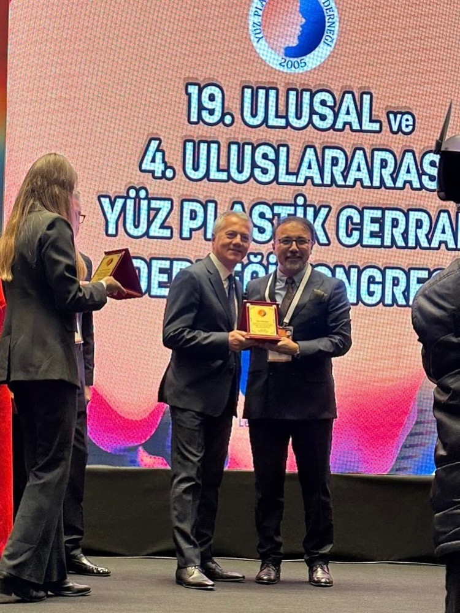
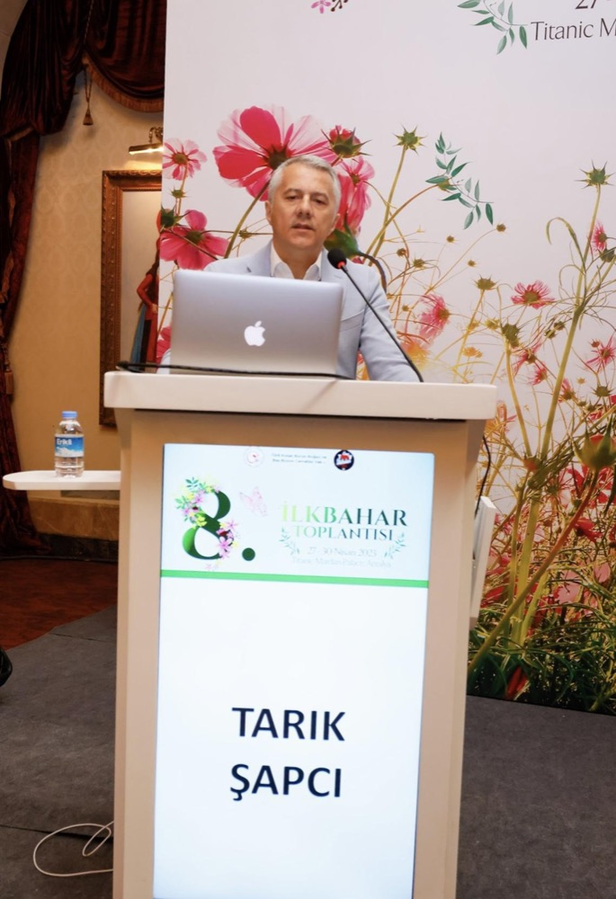
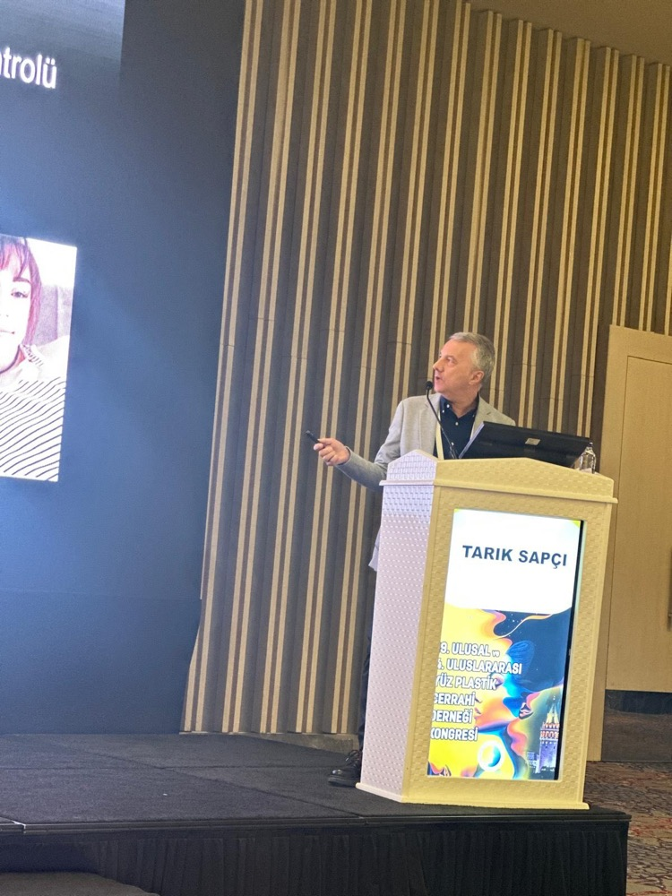
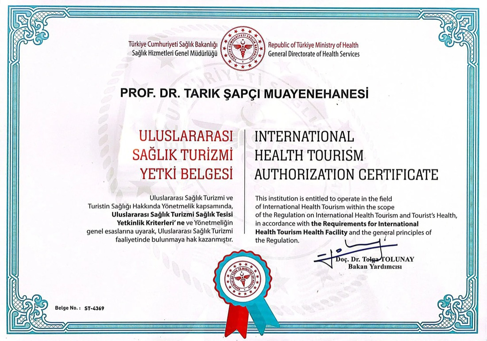

Üyelik ve görevler
- Türk Yüz Plastik Cerrahisi Derneği: kurucu, 2018–2021 başkan
- Türk KBB ve Baş Boyun Cerrahisi Derneği: 2010–2012 yönetim kurulu
- Amerika, Avrupa ve Türkiye Rinoloji Dernekleri üyesi

Kulak Burun Boğaz ve Baş Boyun Cerrahisi uzmanı. Özel ilgi alanları burun ve sinüs hastalıkları ile cerrahisi, estetik burun ve kulak ameliyatları.

Hakkımda
İstanbul Tıp'tan mezun oldu, eğitimini California, New York, Pennsylvania, Bordeaux ve Zürih'te derinleştirdi.
2008'de İstanbul Bilim Üniversitesi Tıp Fakültesi KBB-BBC Anabilim Dalı'nda profesör oldu. Bugün hasta muayenelerini Erenköy'deki muayenehanesinde, ameliyatlarını özel hastanelerde yapıyor; akademik çalışmalarını Türk KBB-BBC Derneği ve Yüz Plastik Cerrahi Derneği bünyesinde sürdürüyor.
Uzmanlık alanları
Haritadaki noktalara ya da aşağıdaki başlıklara dokunarak ilgili hastalık ve tedavileri görün.
Kariyer
İstanbul'dan dünyanın önde gelen KBB kliniklerine; fellowship'ler, eğitimler ve akademik görevler.
İstanbul Üniversitesi İstanbul Tıp Fakültesi'nden mezuniyet.
PTT Eğitim ve Araştırma Hastanesi KBB-BBC Kliniği'nde ihtisas.
1994–1995 yıllarında California Üniversitesi Davis Tıp Fakültesi KBB-BBC Kliniği.
UC DAVIS · USAHaydarpaşa GATA KBB-BBC Kliniği'nde yedek subay olarak asistan eğitimi, hasta takibi ve ameliyatlar.
Columbia Üniversitesi St. Luke's/Roosevelt Hastanesi KBB-BBC Kliniği.
NEW YORK · USAPennsylvania Üniversitesi KBB-BBC Kliniği.
PHILADELPHIA · USAGeorges Portmann KBB Enstitüsü.
BORDEAUX · FRANSAKBB-BBC doçentliği.
Acclarent, Menlo Park California.
CALIFORNIA · USAZürih Üniversitesi KBB-BBC Kliniği.
ZÜRİH · İSVİÇREİstanbul Bilim Üniversitesi Tıp Fakültesi KBB-BBC Anabilim Dalı; 2013'e kadar öğretim görevlisi olarak öğrenci eğitimi.
2005'te kuruluşunda yer aldığı derneğin 2018–2021 yönetim kurulu başkanı; halen yönetim kurulu üyesi.
Akademi
400'ün üzerinde sempozyum ve kongrede konuşma ve kurs; 80 makale, 41 tebliğ ve 5 kitapta bölüm yazarlığı.
Yüz Plastik Cerrahi Derneği okulunda ve kongre kurslarında eğitim vermeye devam ediyor. Son konuşmalarından biri: "Rotasyon ve projeksiyon kontrolünde septum uzatma greftinin önemi".





Sağlık köşesi
Sık görülen KBB sorunları hakkında kısa bilgiler. Ayrıntılı yazılar için başlığa dokunun.
Video
Muayenehane, yurt dışından gelen hastalara hizmet verebilmek için Sağlık Bakanlığı'nın uluslararası sağlık turizmi yetkisine sahiptir.

Randevu & iletişim